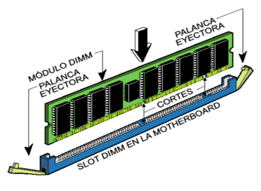

1.2.2.2 Memoria Principal
La memoria del semiconductor utiliza en su arquitectura
circuitos integrados basados en semiconductores para
almacenar información.
Un chip de memoria de semiconductor puede contener
millones de minúsculos transistores o condensadores.
Existen memorias de semiconductor de ambos
tipos: volátiles y no volátiles.
En las computadoras modernas, la memoria principal
consiste casi exclusivamente en memoria de semiconductor
volátil y dinámica, también conocida como memoria dinámica de acceso aleatorio o más comúnmente RAM
(Random Access Memory).

Con el cambio de siglo, ha habido un crecimiento constante
en el uso de un nuevo tipo de memoria de semiconductor no
volátil llamado memoria flash.
Dicho crecimiento se ha dado, principalmente en el campo
de las memorias fuera de línea en computadoras
principalmente de escritorio.
Las memorias de semiconductor no volátiles se están usando
también como memorias secundarias en varios dispositivos de electrónica avanzada y computadoras especializadas y no especializadas.